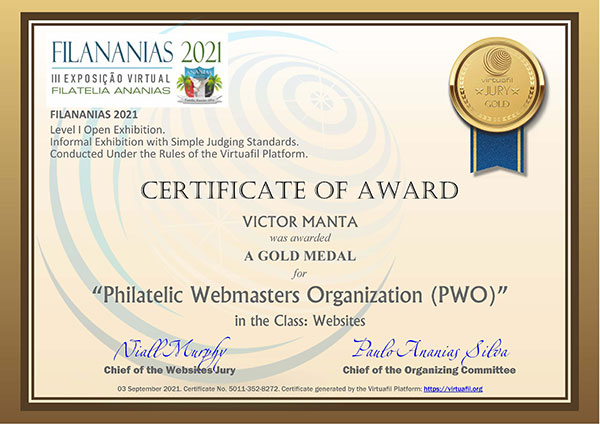
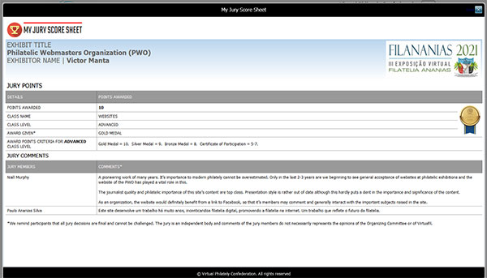

A New Philatelic Exhibition
← Back to Websites Competitions
THE FIRST OPEN VIRTUAL PHILATELIC WEBSITES AND SOCIAL MEDIA EXHIBITION
Victor Manta, PWO President
Registration at https://pwoexpo2022.virtuafil. org closed.
The Philatelic Webmasters Organization (PWO) was created by its President, Victor Manta, in 2001 to promote, support and develop philately through philatelic webmastering, and also to fight against the proliferation of illegal and excessive stamps. Since that time, the membership has grown to more than 400, representing more than 415 sites. The PWO logo is a familiar and long-established icon on many of the world's philatelic sites.
After more than 20 years of correspondence, representations and appeals to the formally instituted, traditional philatelic organizations, even in 2022 websites are still not widely accepted at their formal exhibitions, and the medium is still considered to be an experimental sub-division of the Philatelic Literature Class. At formal exhibitions where philatelic websites are accepted, participation is usually restricted to members of recognized clubs and societies and requires the payment of substantial fees. Participation typically involves navigating a labyrinth of complex rules, few of which have any relevance in the digital era and serve only to restrict participation to new and young philatelists. Neither can participants expect that their work will be evaluated by a jury with suitable knowledge, qualifications, or experience in the field of digital media.
Finally, after more than 20 years of PWO's participation at formal exhibitions conducted by the traditional organizations, with all their advantages, disadvantages, contradictions and limitations, the time came for us, the world's philatelic webmasters, to act according to our own rules, on our platforms and following our own ideals and philosophy.
So, with great honor and enthusiasm, we inaugurate PWO-EXPO 2022 - the first open virtual philatelic websites and social media exhibition, whose main objective is to promote Philately via the Internet and to encourage and train new philatelists.
- Zero costs for participation
- No requirement for membership of any philatelic club or society
- No requirement for points or awards earned at previous exhibitions
- No restrictions on nationality
- No National Commissioners participation applications go directly to the Organizing Committee (OC)
- Simple, common-sense rules and judging criteria
- Highly qualified in websites and social media jury.
PWO-EXPO 2022 includes a number of key elements:
- In addition to jury evaluation for competitive exhibits, online popular voting by members of the public is enabled for all exhibits (both competitive and non-competitive) and popular voting awards are given
- Public Links are provided for ALL exhibits
- All exhibits have preview images which can be uploaded by the site owner
- All kinds of online platforms are supported: websites, blogs, YouTube, Instagram, Twitter and others
PHILATELIC CLASSES:
PWO-EXPO 2022 is being presented by Virtuafil , an informal organization and online platform which offers an alternative to the traditional, formal philatelic organizations, designed to minimize restrictions and maximize open and zero-cost participation at exhibitions. As an independent organization, Virtuafil has instituted a new, distinct Philatelic Class : Websites and Social Media. This new Class is not connected with the traditional Class of Philatelic Literature.
Aiming at the participation of all philatelists, PWO-EXPO 2022 is open to all philatelic webmasters, regardless of their level of experience. PWO-EXPO 2022 will have the single Class: Websites and social media , but sub-categorized to suit all participants:
- Websites and social media: Personal (Competitive: compete for jury awards)
- Websites and social media: Institutional (Competitive: compete for jury awards)
- Websites and social media: (Non-competitive)
NOTES:
There is no limit on the number of exhibits each participant can register. The only significant restriction that applies to participation at PWO-EXPO 2022 is to online sell platforms, web stores and to sites that are principally commercial in nature. Please see the Rules for full information.
We are hoping to get a large response from the members of the world philatelic community, PWO members included, and that they will share this site with all their philatelic friends and associates. As with all internet-based projects, the success of PWO-EXPO 2022 depends on our common enthusiasm, initiative and sharing.
Preliminary Info December 2021 - January 2022
Victor Manta, PWO President
For twenty years the Philatelic Webmasters Organization (PWO) has actively contributed to the development of online philatelic activity, which can be seen by reading the articles on this website. It has also fought and continues to fight against the spread of illegal and excessive stamps, which undermine the health of world philately.
PWO is currently pleased to announce that, starting in 2022, it will organize under its own name and in its own organization an exhibition and an online contest of sites from around the world, for which webmasters will announce in their desire to participate.
The stated goal is to further develop the accessibility of philatelic webmasters to the world philatelic activity and to make known their sites dedicated to various branches of philately. To achieve this goal, when PWO was contacted to become an institutional member of Virtuafil, The Virtual Philately Confederation, PWO accepted without hesitation. To this has contributed that Virtuafil has established a philatelic Class dedicated specifically to "Websites and Social Media". Therefore PWO, using the Virtuafil Platform, will host a virtual exhibition exclusively for all the world's philatelic websites, exhibition named the "PWO-EXPO 2022".
The organizers of this exhibition and competition have been members of PWO for many years, as well as are the members of the jury, most of whom have participated in many online philatelic exhibitions and therefore have direct experience in this field.
As with all exhibitions on Virtuafil, participation will be 100% free of costs and will be open to participation to all non-commercial philatelic websites and social media sites, anywhere in the world, without membership to other organizations or other pre-qualifying conditions.
To give you an example of what the results of such participation could be expected, I will present you as example the participation of the PWO site in the virtual exhibition Filananias 2021, organized on the same Virtuafil platform as the future PWO Expo 2022 exhibition, but managed by other administrators. For more information please visit:
https://virtuafil.org/public-expo-palmares-list.aspx?exID=5011In short, I will only mention that Filananias 2021 went flawlessly and that the organizers did everything to keep the participants well informed about what is happening, what is expected of them and what will happen next. Below I reproduce the Certificate of the Jury and the Jury Sheet that I received from the organizers as the webmaster of the PWO site. I would like to thank the organizers for this initiative and for all their efforts!


(click for bigger image)The expo site for "PWO-EXPO 2022" will be ready in early 2022 for online registrations so please stay tuned for further details, that will appear in time on this site.
| Created:
November 2, 2021. Revised:
July 11, 2022 |